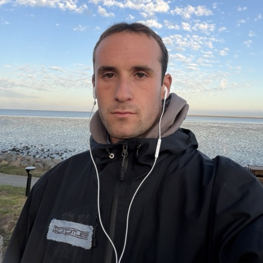

Hi, I'm Jacob.
Building tools for protein design.
the future is sustainable.
I'm a machine learning scientist at Prescient Design (Genentech), where I work on post-training structure prediction models and on agentic workflows for drug discovery.
Before that, I did my PhD in the Baker lab at the University of Washington Institute for Protein Design, building generative models for protein design. I co-developed ProteinGenerator, a RoseTTAFold-based diffusion model that designs protein sequence and structure together, and my dissertation was on protein design at library scale. Earlier, I studied biomedical engineering at SUNY Binghamton, where I engineered 3D cardiac microtissues.
I also co-organize the GEM workshop, which brings together generative ML and experimental biology for biomolecular design at ICLR and NeurIPS.
Experience
- Machine Learning Scientist Post-training structure prediction models and building agentic workflows for drug discovery.
- Graduate Research Assistant Developed a diffusion model in protein sequence space using a structure prediction framework, and guided it with experimental data. Built a discrete Bayesian optimization workflow for lab-in-the-loop protein engineering, scalable pipelines for custom-filtered libraries for high-throughput screens, and autoencoders with variable-rate compression for protein–ligand complexes.
- Undergraduate Research Assistant Engineered 3D cardiac microtissues to improve their biophysical organization and designed a bioreactor for growing cardiac mesh tissues.
Education
- Solomon Schechter Day School
- Hall High School
- B.S., Biomedical Engineering
- M.S., Biomedical Engineering Thesis: Enhancing Formation of Stem-cell Derived 3D Cardiac Tissue with Extracellular Matrix
- Ph.D., Molecular Engineering Dissertation: Protein Design at Library Scale
Service & Teaching
- Co-organizer, GEM workshop
- Mentor, Undergraduate Mentorship Program Trained students to process data and train sequence-to-function prediction models.
- Teaching Assistant, Introduction to Structural Biology Led discussion sections and lectured the unit on methods development.